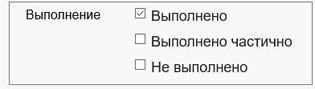
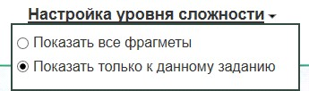
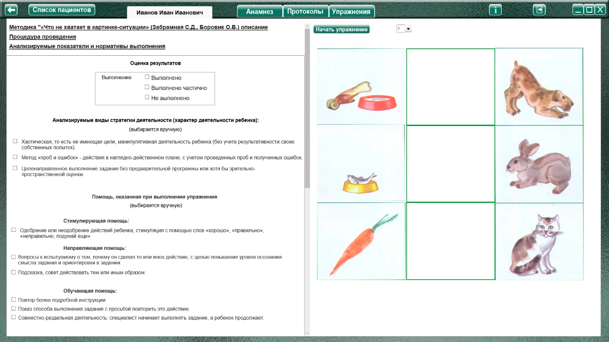
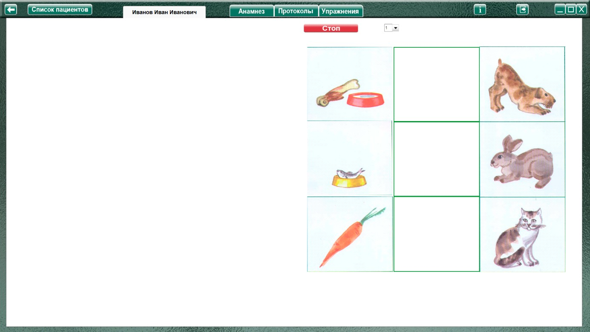
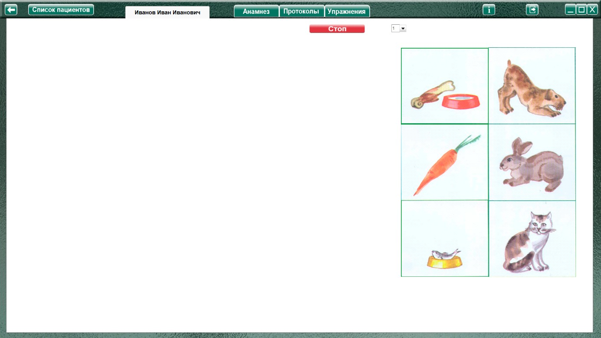
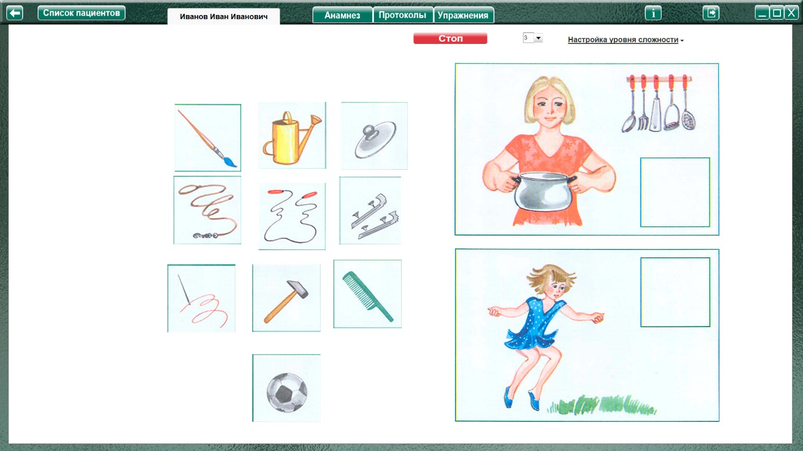
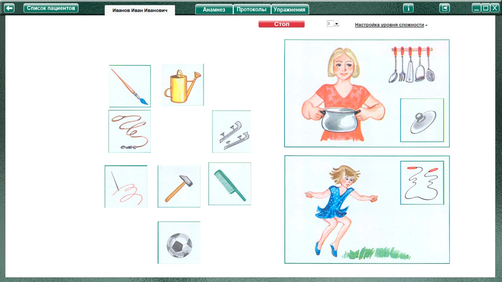

Методика "Что не хватает в картинке-ситуации"
(Забрамная С.Д., Боровик О.В.)
Методика "Что не хватает в картинке-ситуации" (Забрамная С.Д., Боровик О.В.) описание
Процедура проведения.
В первых двух заданиях изображены животные и употребляемая ими пища. Ребенку показывают изображения животных и просят положить к каждому животному его любимое блюдо. Эти задания можно предлагать детям с 4,5—-5 лет.
В заданиях 3 - 7 изображены разные картинки-ситуации и недостающие к ним элементы. Ребенку показывают несколько картинок-ситуаций и просят положить недостающие элементы-фрагменты к соответствующим ситуациям. Эти задания предлагают детям с 6—7 лет.
Анализируемые показатели и нормативы выполнения
Дети с нормальным умственным развитием с интересом выполняют все эти задания.
Дети с задержкой психического развития тоже проявляют интерес к заданию и в 6—7 лет выполняют задание (некоторым нужны наводящие вопросы).
Умственно отсталые дети 7—8 лет могут выполнить это задание только при оказании помощи со стороны взрослых (разъяснение и показ).
Оценка результатов

Характер деятельности ребенка:
Виды возможной помощи:
Стимулирующая помощь
Направляющая помощь:
Обучающая помощь:
Протокол фиксации результатов исследования
_________________________________ _______________
ФИО Дата рождения
Методика |
Что не хватает в картинке-ситуации |
Автор методики (адаптации, модификации) |
Забрамная С.Д., Боровик О.В. |
Цель: |
Выявить запас и точность представлений; характер сравнения; способность к обобщению; наблюдательность; устойчивость внимания; целенаправленность деятельности; проявление и стойкость интереса. |
Дата / специалист |
|
Результат: вывод об уровне развития |
|
Примечание |
|
Процесс выполнения диагностической методики |
|
№ |
Факт выполнения / Время |
Характер деятельности ребенка |
Виды помощи |
Логика заполнения протокола
Заполняется автоматически
Имя специалиста – логин при входе в программу.
Дата – дата и время прохождения упражнения в формате дд.мм.гггг. чч:мм
Факт выполнения (выполнено, не выполнено.) / заполняется в зависимости от выбора в разделе оценка результата.
/ Время - время, затраченное на прохождения задания.
№ номер выполнения задания
Ячейки «Характер деятельности ребенка», «Характер помощи» заполняются в зависимости от проставленных чекбоксов в разделе «Оценка результатов» или записи специалиста.
Остальные ячейки заполняются (правятся) специалистом самостоятельно.
Описание элементов управления.
Настройка уровня сложности
(только в заданиях 3 - 7)
При нажатии открывается меню настройки

При выборе «Показать все фрагменты» (по умолчанию выбрано) отображаются недостающие фрагменты ко всем заданиям усложняя выбор.
При выборе пункта «Показать только к данному заданию» отображаются только 2 фрагмента относящиеся только к данному заданию.
Выполнение упражнения
Задания 1-2

При нажатии «Начать упражнение», закрывается область оценки результата открывая задание на весь экран

Выполнить задание согласно пункту «Процедура проведения». Необходимо переместить нужные картинки с едой в квадратики к соответствующим животным при помощи мышки с зажатой левой кнопкой.

По окончании задания нажать кнопку «Стоп», открывая поле оценки результата.
При необходимости выбрать факт выполнения, характер деятельности, виды помощи, и нажать кнопку «Сформировать протокол». Произвести оценку результата (заполнить оставшиеся ячейки протокола) согласно пункту «Анализируемые показатели и нормативы выполнения».
Только после формирования протокола по выполненному заданию можно приступить к выполнению следующего!
Для продолжения выбрать в меню следующее задание и нажать кнопку «начать упражнение»
Упражнение 3 – 7

В упражнениях 3 – 7 необходимо перенести недостающие фрагменты к нужным картинкам при помощи мыши с зажатой левой кнопкой

По окончании задания нажать кнопку «Стоп», открывая поле оценки результата. При необходимости выбрать факт выполнения, характер деятельности, виды помощи, и нажать кнопку «Сформировать протокол». Произвести оценку результата (заполнить оставшиеся ячейки протокола) согласно пункту «Анализируемые показатели и нормативы выполнения».
Только после формирования протокола по выполненному заданию можно приступить к выполнению следующего!
Для продолжения вновь выбрать в меню следующее задание и нажать кнопку «начать упражнение»